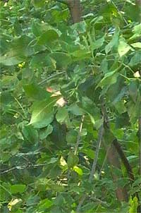
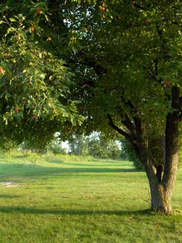
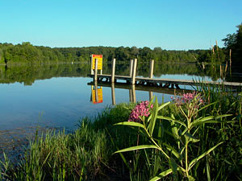
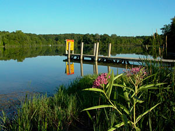
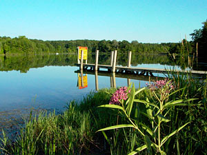

Некоторые практические приёмы съёмки пейзажа
Глава II. Цвет
Баланс белого цвета
Говоря о цвете в цифровой фотографии, начнём с так называемого "баланса белого цвета". Несмотря на то обстоятельство, что на эту тему уже писано-переписано множество статей, которые Вы можете найти в Интернете, я не перестаю удивляться на способности некоторых фотографов. К примеру, один начинающий господин написал мне письмо с просьбой помочь разобраться с проблемой баланса белого в его фотокамере, стоящей, между прочим, 8000$. Для начала, я дал ему ссылку на статью "Баланс белого и применение светофильтров при съёмке пейзажа на цифровую фотокамеру", в которой эта тема более чем подробно рассмотрена и подана на блюдечке. Ознакомившись со статьёй и проведя необходимые эксперименты, господин написал мне второе письмо, что, мол, статью прочитал, всё понятно, но всё равно имею проблемы с балансом белого. После прослушивания, простукивания и уточнения симптомов заболевания вдруг оказалось, что проблема неправильного баланса белого заключается в наличии на снимке белого неба, вместо голубого...
Чтобы не повторяться подробно на эту тему, я отсылаю Вас к статье, упомянутой выше. А говоря кратко, применение баланса белого основано на свойствах противоположных цветов так называемого «цветового круга», знакомого художникам и приведённого на фото справа. Чтобы нейтрализовать влияние, скажем, жёлтого цвета ламп накаливания, баланс белого устанавливается в противоположное, «синее» значение. Когда же нам нужно побороть синеву, скажем, пасмурного дня, баланс белого выставляется, наоборот, в «жёлтое» значение. То же самое верно для любых пар цветов, расположенных друг напротив друга в цветовом круге. Такие пары цветов называется дополняющими.
Устанавливая баланс белого в то или иное значение, мы создаём общую тональность нашего пейзажа по всему полю нашего снимка. Эта тональность может быть тёплой или холодной. Как художник с четвертьвековым стажем открою Вам один маленький секрет живописцев: пейзажи часто пишутся на так называемом "тонированном" холсте. В отличие от обычного, белого, холста, при тонировании холста в грунтовку добавляют пигменты разных цветов: зелёного, охристого, голубого. Картина, написанная на таком холсте масляными красками приобретает едва заметный оттенок, соответствующий тону грунтовки. Это делается для того, чтобы оказать влияние на восприятие зрителя, действуя подсознательно через возможности цвета. Известно свойство холодных тонов (синий, голубой, зелёный) действовать отталкивающе, в то время как тёплые тона, такие как красный, розовый, жёлтый и оранжевый действуют на восприятие более позитивно, притягивая зрителя. Напомню, что этот эффект связан с тональностью кожи человека, поскольку база для цветового восприятия закладывается в самые первые недели жизни любого человека, когда самые приятные ощущения связаны с большой формой тёплых тональностей, из которой, при желании, можно высосать молочко.
Из изложенного следует практический вывод - пейзажи тёплых тональностей производят более благоприятное действие, чем холодных. Поэтому автор призывает иногда сознательно нарушать нормальный баланс белого, в сторону его "утепления". Это связано с ещё одной причиной. Дело в том, что цветовая тональность обычного природного пейзажа, особенно в середине дня, обусловлена рефлексами неба на траве и листьях деревьев. Для примера, если Вы возьмёте поляризационный фильтр, подойдёте близко к ветке лиственного дерева, и покрутите фильтр вокруг оптической оси, то увидите сами, насколько велико влияние голубой тональности неба в общей цветовой картине. Посмотрите иллюстрацию к сказанному на Фото 5.
 |  |
| Без поляризатора | С поляризатором |
Когда же Ваш пейзаж почти полностью состоит из листьев и травы, то это влияние будет так велико, что получившаяся фотография будет иметь холодный, отталкивающий зрителя тон. Поэтому в ситуациях с чистым небом в солнечную погоду автор сознательно устанавливает баланс белого в режим "clouds", или "облака".
|  |  |
| Баланс белого "солнце" | Баланс белого "облака" |
Посмотрите на Фото 6, какую принципиальную разницу даёт применение более тёплого баланса белого ("облака"). Если слева мы видим ничем не примечательную картинку, то картинка справа вызывает какие-то тёплые чувства в душе, выглядит более живописно. Ещё более точной настройкой баланса белого в таких условиях является установка баланса белого вручную по листочку бумаги из школьной тетради в синюю клеточку, освещённому солнцем. Попробуйте сами и Вы не пожалеете.
Говоря о балансе белого, не могу не затронуть следующий вопрос: как быть с закатами и восходами. Конечно, это дело вкуса конкретного фотографа, выставить ли режим охлаждённого баланса белого, или использовать режим съёмки в солнечную погоду. Более правильным будет использование первого режима, а использование второго - совершенно неправильным с точки зрения правильной передачи цветовых температур. В своей практике съёмки закатов автор придерживается совершенно неправильного пути, и снимает закаты с использованием "солнечного" режима, несмотря на то, что так поступать совершенно неправильно. Дело в том, что закат ценится именно цветовой гаммой, а не расположением солнца над горизонтом. Убить цветовую гамму - значит проявить неуважение к закату и лишить зрителя возможности насладиться теплотой тонов, демонстрируемое нам Матерью-Природой перед наступлением прохлады ночи. А уж совсем неумной затеей будет использование автоматического режима установки баланса белого, который вообще не стоит применять ни в каких ситуациях, даже под угрозой расстрела и о существовании которого стоит забыть навеки.
Если Ваша камера имеет возможность установки баланса белого вручную, и Вы планируете использовать нецветные светофильтры, то я настоятельно рекомендую перед фотографированием выставить баланс белого по белому листочку бумаги с надетым фильтром, с тем, чтобы избежать появления остаточной тональности, которую может привнести фильтр. К примеру, использование с виду совершенно бесцветного фильтра REDHANCER, который насыщает оттенки только тех предметов, которые имеют красные тона, и, по идее, не должен никак влиять на все остальные цвета, без ручной установки баланса белого, даст Вам равномерный розовый тон по всему полю снимка, да такой, что мало не покажется. Сказанное относится ко всем поляризаторам, к фильтрам семейства ND (включая нейтрально-градуированные), фильтрам-усилителям отдельных цветов, и тому подобным. Добавлю также, что вместо белого листочка бумаги Вы можете использовать поверхность нейтрально-серого цвета, если таковая найдётся под рукой.
Использование поляризационного фильтра
Как следует из сказанного в предыдущих абзацах, избавиться от голубых рефлексов на поверхностях под открытым небом можно также при помощи поляризационного фильтра. Вообще, использование "поляризаторов" в практике пейзажной съёмки исключительно полезно, именно с точки зрения цветности Вашего снимка. Применение этого фильтра в солнечную погоду насыщает цвета, устраняет вредные отражения и увеличивает контраст. Следует помнить три момента, связанные с применением этого фильтра. Во-первых, поляризатор работает не всегда, он фильтрует только поляризованные лучи, количество которых на разных участках неба различно, и зависит от угла относительно солнца. Наибольший эффект дает применение поляризатора под углом 90 градусов от солнцу, то есть, если стоять лицом к солнцу, то справа или слева. Отражения неба от воды требуют индивидуального подхода в каждом случае, в силу неопределённости углов отражения. В пасмурную погоду, а также в направлении на солнце или от него поляризатор Вам не поможет. Говоря точнее, он Вам поможет, но не так, как Вы ожидали. Дело всё во второй особенности этих фильтров - они сильно, на две единицы EV задерживают световой поток. Эта величина не зависит от угла поворота поляризатора вокруг своей оси (Вам известно, что для получения различной степени эффекта, поляризатор следует вращать вокруг оси). Таким образом, поляризатор может помочь Вам справиться с ещё одним ограничением Вашей камеры - с небольшим значением минимально-возможной диафрагмы Вашей камеры, которое для большинства камер этого класса составляет f8. Снимая против солнца (где трава выглядит определённо сочнее), или просто яркую сцену, Ваша камера может посчитать, что яркость сцены превышает максимально-допустимые пределы, и отказаться фотографировать. Тут поможет либо упомянутый выше фильтр ND или поляризатор вместо него. Третьим моментом, на который автор хотел бы обратить Ваше внимание, является то обстоятельство, что с фотокамерами, не обладающими зеркалом, можно использовать не только циркулярные поляризаторы, но и обычные линейные, которые, как мне настойчиво кажется, работают лучше циркулярных.
Цветовой шум
Одной из нерешённых пока проблем матриц CCD недорогих фотоаппаратов является так называемый "цветовой шум". Чтобы понять, что этот такое, посмотрите на Фото 7 чуть ниже. Если Вы обратите внимание на то, как аморально выглядит самый верхний квадратик жёлтого цвета, то получите представление о том, что такое цветовой шум. Откуда берётся этот шум? Дело всё в несовершенстве алгоритма программы, заложенной в Вашу камеру. Оценивая яркость соседних пикселов, программа всё время боится ошибиться, и пропустить начало границы перехода от одного цветового пятна к другому, то есть "прозевать" границу предмета. Такие ошибки чреваты размытостью контуров предметов, нерезкостью и потерей контрастности. "Перестраховываясь", программа, чувствуя хоть малейший перепад в цвете или яркости соседних пикселов (вызванный несовершенством оптики), присваивает им различные значения яркости и цвета, что и приводит к появлению шумов в цвете на больших равномерно окрашенных участках изображения, особенно при больших контрастах сцены. Поэтому и получается, что соседние пикселы, которые должны по идее выглядеть одинаково, выглядят по разному. Такова истинная причина этого явления, а разьяснение фирмы-производителя цифровой фототехники Canon, что, мол "проблему цветового «шума» изображений, полученных с помощью сканеров и цифровых фотоаппаратов на основе матриц ПЗС (приборов с зарядовой связью), создало быстрое распространение этих устройств" является невинным заблуждением производителя. То есть, получается, что мы сами виноваты в том, что покупаем цифровые фотоаппараты, и фирмы-производители не успевают совершенствовать алгоритмы заложенных в них программ.
На сегодняшний день не существует возможности избавиться от этого неприятного явления во время съёмки. Все источники советуют устранять это дело, используя программные средства, во время обработки полученных снимков на компьютере. Поэтому мы поговорим об этом в четвёртой главе, посвящённой компьютерной обработке Вашего снимка. Следует лишь помнить, что это явление чаще встречается в условиях повышенного контраста и при наличии больших или не очень больших, но равномерно окрашенных поверхностей, чаще тёмного цвета. Так, к примеру, автор уже три раза пытался снять картинку, подобную приведённой на фото 7, но все попытки заканчивались с неизменно-"превосходным" результатом: цветовой шум проявлялся то в одном квадратике, то в другом, из-за строго-равномерного окраса каждого квадратика. Чтобы зритель не подумал, что я снимал на какую-то дешёвую камеру неизвестного происхождения, скажу, что все иллюстрации для этой статьи выполнены с использованием цифровой фотокамеры Leica Digilux 1.
Функция изменения цветовой насыщенности в фотокамере
Некоторые цифровые фотоапараты предоставляют возможность программно насытить или, наоборот, слегка обесцветить цветовую палитру. Стоит ли пользоваться этой возможностью? Посмотрите на Фото 7, на котором приведены три результата использования этой функции.
| A. Low saturation |  |
| B. Normal saturation |  |
| C. High saturation |  |
Верхний снимок снят в режиме пониженной цветности, средний - с нормальной цветопередачей, а нижний - с насыщенными цветами. На верхнем снимке очень плохо видны светлые тона цветов в нижней части, на нижнем же они хоть и отчётливо видны, но приобрели грязноватый налёт. Но самое главное можно наблюдать, глядя на уже успевший нам полюбиться жёлтый квадратик: в условиях насыщенного цвета, так же, как и при пониженой цветопередаче, на нём заметно гораздо больше цветового шума, посторонних артефактов. Это и неудивительно - программное обеспечение фотоаппарата не смогло справиться с поставленной перед ним задачей, потому что, как нам уже объяснили, "фотоаппараты с матрицей CCD получили широкое распространение". Поэтому при всём Вашем и моём желании снимать пейзажи в насыщенных тонах, этого делать не стоит. Средний снимок демонстрирует нам хорошую цветопередачу как ярких оттенков, так и слабых тонов, при этом на нём почти отсутствует цветовой шум и нет искажений цвета. Это даст нам хорошую основу для того, чтобы потом, при обработке снимка в ФотоШопе добиться того цвета, который нам хочется видеть, в то время, как из плохого снимка хороший уже не получится, обладай мы хоть тремя ФотоШопами.
Влияние чувствительности матрицы на цвет
Цвет также зависит от выбранной Вами чувствительности матрицы. Посмотрите на Фото 8, на котором приведены три варианта одного и того же пейзажа, снятые на матрицу со значениями чувствительности 100, 200 и 400 ISO.
| A. ISO 100 |  |
| B. ISO 200 |  |
| C. ISO 400 |  |
Из этих иллюстраций видно, что наименьшими искажениями цвета и самой насыщенной цветопередачей обладает матрица с наименьшей чувствительностью. С другой стороны, на последнем снимке, снятом на ISO 400, цвета не только несколько обесцвечены, но более того, они безбожно перевраны. Поглядите на это небо в зелёных тонах! Если оно такое зелёное, то что тогда голубое отражается от поверхности воды? Этот пример ещё раз подтверждает, прямо скажем, аморальность использования величин высоких чувствительностей матрицы при съёмке цветных пейзажей. Почему так происходит?
Всё дело в психологии матрицы. Матрица - это элемент, получающий информацию, которую мы потом видим на наших снимках. Экспонометр камеры рассчитывает необходимый объём этой информации таким образом, чтобы её величина была всегда постоянна для одной и той же чувствительности, и равна среднесерому снимку с показателем 18%. Если принять за основу, что для матрицы в 100 ISO объём этой информации равен 100%, то для чувствительности ISO 200 это будет уже 50%, а для ISO 400 - всего 25%. То есть, матрица и программы, обрабатывающие эту информацию, получают в случае высокочувствительной матрицы ровно в 4 раза меньше информации для "обдумывания", чем в случае низкочувствительной.
Как чаще всего бывает и среди людей, недостаток информации выливается в неправильные решения. В отличие от анекдота про блондинку, которая сделала то открытие, что свет на кухне после выключения прячется в холодильнике, цифровая фотокамера не имеет подобной "ёмкости" для хранения света после экспозиции, для его неторопливого анализа. Вместо этого ей приходится пускать в ход все свои итерации во время экспонирования, которое тем меньше, чем выше чувствительность. Даже если Вы, как та смекалистая блондинка, решите обмануть матрицу и сделать три снимка, подобных приведённым выше с одинаковой выдержкой, то всё равно, из-за разницы в величине диафрагм Ваша камера недополучит информацию, необходимую ей для принятия правильного решения.
Другой стороной этой же медали являются нарушения цвета при длинных выдержках. Замечено, и производители цифровых фотокамер об этом сами говорят, что правильная цветопередача нарушается при продолжительных выдержках, равных 3-4 секунды и длиннее. Это является результатом избыточности информации, с наличием посторонних, не влияющих на цвет объекта, шумов. Принимая эту неверную информацию в расчёт, матрица опять ошибается и перевирает цвета. Но развивать эту тему тут я не буду, поскольку нас это мало касается, это экзотические случаи. Большинство цифровых мыльниц обладают наибольшей диафрагмой 2.0, что даёт нам возможность фотографировать ночные пейзажи с выдержками, короче чем 1 секунда, при которых этот информационный шум не влияет на результаты расчёта, а следовательно, и на цветопередачу нашего снимка.
← Глава I. Свет | Глава III. Чёткость → |